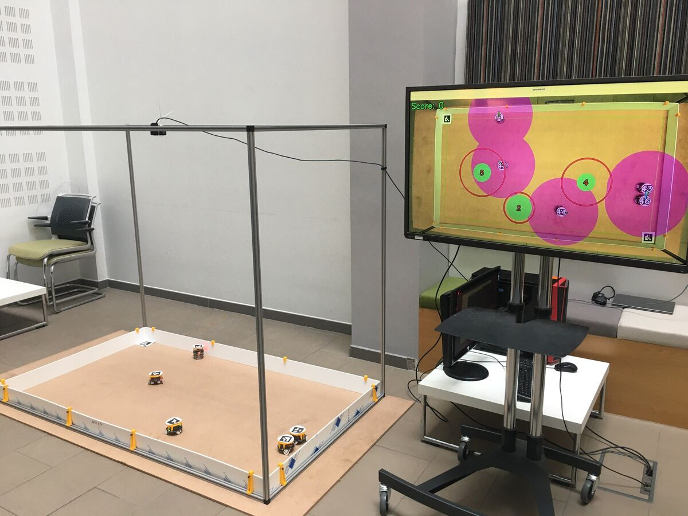
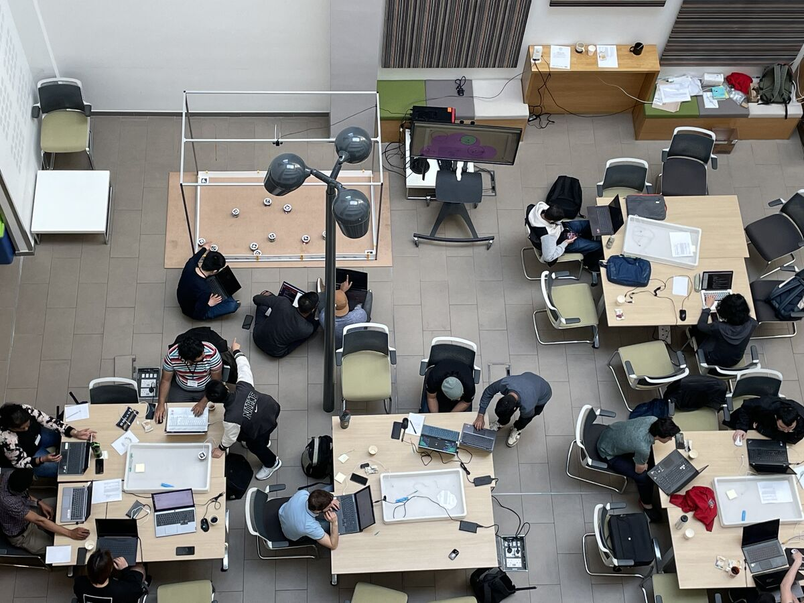
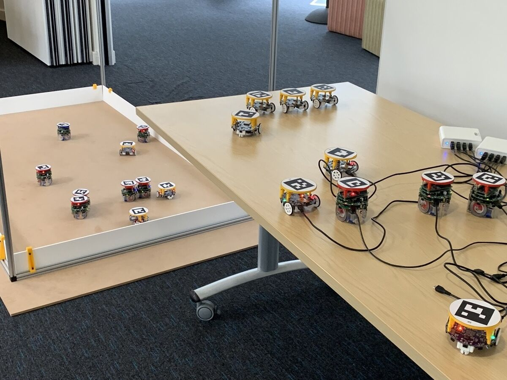
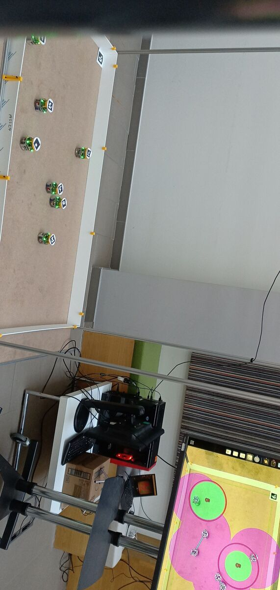
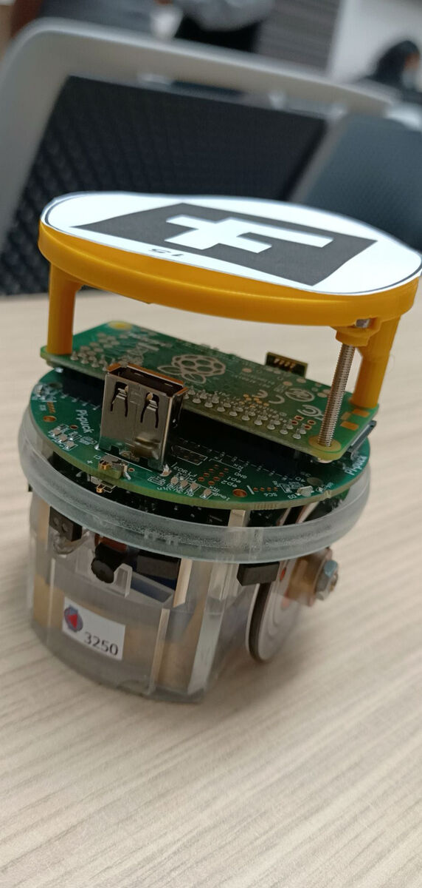
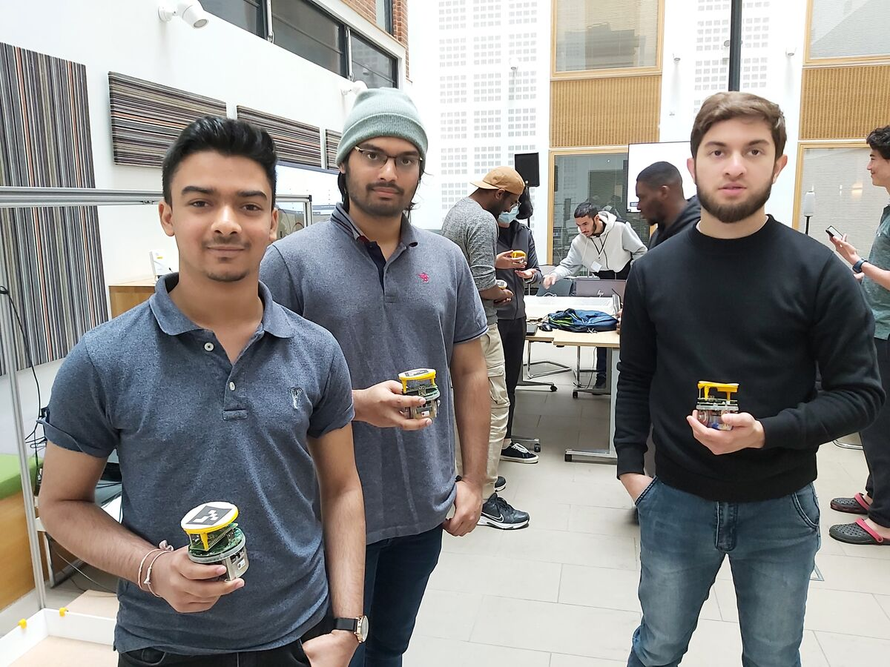
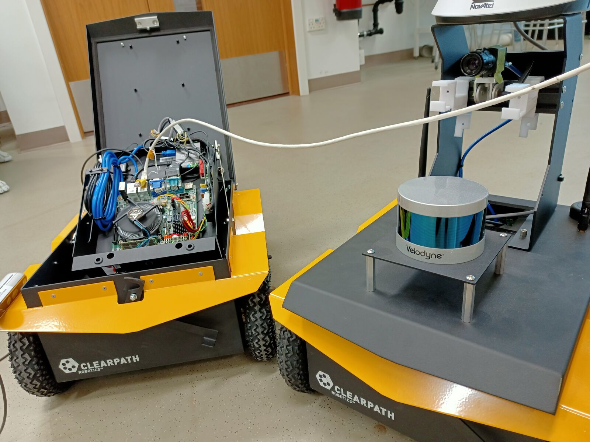
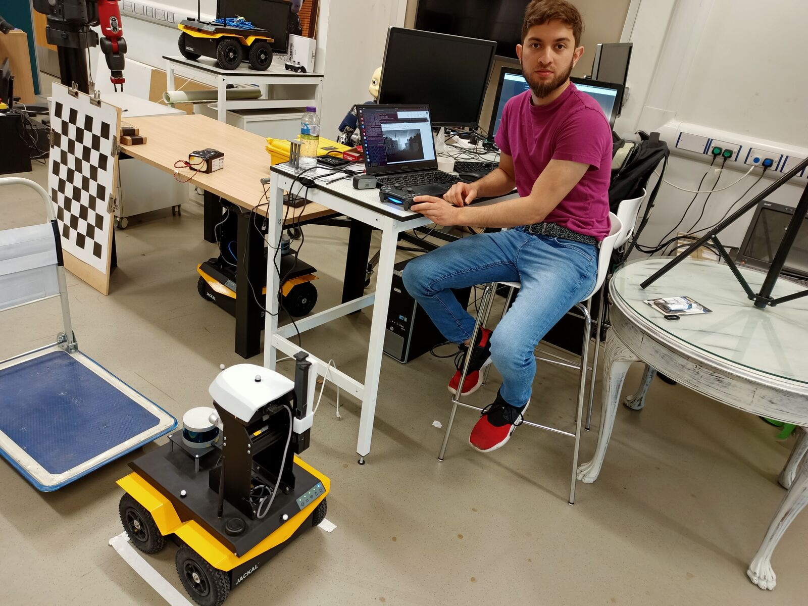
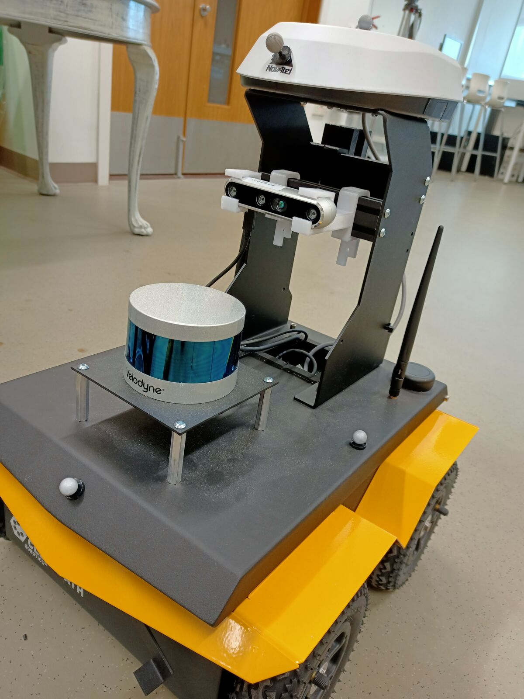

Event Overview:
Represented the University of Sheffield in a prestigious hackathon co-hosted by The University of York,
The University of Manchester, and The University of Sheffield. Sponsored by the Robotics and Autonomous Systems (RAS) network,
the event focused on swarm robotics.
Challenge:
Developed an algorithm to enable a human operator to control five robots simultaneously,
optimizing their performance in completing dynamically appearing tasks within a limited timeframe.
Achievement:
Our team implemented an algorithm based on Euclidean distance, allowing us to achieve the highest score
by completing the most tasks efficiently. We were awarded the "Best Team Solution" for our efforts.
Technologies | Language | Skills | Hardware :
Python, Robot Opterating System (ROS), Networking Protcols, Pi-puck & MONA robots.






Hackathon in Action
Thesis: Performance Evaluation of state-of-the-art approaches for state-estimation and autonomous navigation

Data Capture in Action
Aliasing & Loop Closure in Action
Basic Navigation
Description:
Simultaneous Localization and Mapping, SLAM, is a system that enables robots, including UAVs and UGVs to navigate in environments using sensor data and simultaneously builds a map of the surrounding. Although mapping and localization go hand in hand, this report focuses solely on SLAM’s localization/state estimation aspect, much like the chicken and egg problem. This thesis evaluates various localization/state-estimation approaches ranging from VO to state-of-the-art VIO SLAM systems in terms of robustness and computational efficiency. The robustness of approaches was measured by computing Absolute Trajectory Error, ATE, while the computational efficiency was done through measuring the CPU usage, memory footprint and power consumption. The state-estimation approaches considered in this report include VINS-Mono, MIT Kimera, Nvidia Elbrus, OKVIS, along with ORBSLAM3 and a few of its variations, e.g., monocular/stereo.
Four parameters: speed, perceptual aliasing, lighting condition and dynamic/heterogeneous environment, were considered to evaluate seven state-estimation (SLAM) approaches by constructing eight different scenarios in an indoor Vicon lab with near-replication of the real-world environment.
Two approaches, DBoW2 and Openfabmap, to train SLAM algorithms were briefly evaluated in terms of loop closure recall rate and training speed. DBoW2 showed optimal performance and was carried forward to train the selected algorithms in each scenario.
Clearpath Jackal was used to implement the offline testing method, where a large set of image sequences were recorded using various sensors, including Intel RealSense. Highly accurate and time-synchronized ground truth was obtained from the motion capture system, i.e., the VICON system at 100Hz. The recorded data was processed through selected state-estimation algorithms on two hardware platforms, a typical laptop and an IoT device, i.e., Jetson Nano. The estimated trajectory obtained from algorithms was aligned with the ground truth, and ATE error was computed.
The result of the statistical analysis showed that stereo-based performed better than the monocular-based implementation of the same approach while slightly consuming more computational resources. Meanwhile, fusing Kalman filtered IMU measurements reduced the drift error of a basic monocular-based approach but also resulted in higher computational properties. ORBSLAM3-Monocular-Inertial was comparatively able to localize better than other monocular-based approaches. Though slightly struggled in perceptual aliasing environment with homogeneous objects but still outperformed the majority of considered approaches.
On the other hand, stereo-based Nvidia Elbrus performed relatively superior to other approaches in terms of robustness. However, ORBSLAM3-stereo outperformed Elbrus due to its weakness in the dark and texture-less environments/scenarios. OKVIS and VINS-Mono performed equally well compared to other approaches in simpler (easier) scenarios, however, began to struggle as the scenarios and the environment became complex but consumed minimal computation resources.
Future work is also proposed, which involves a complete software implementation for much quicker testing and more straightforward implementation of various scenarios or environments, particularly in the case of perceptual aliasing. It further recommends outdoor real-time testing to vigorously evaluate each parameter and also add uncertainty to the testing environment that nature comprises.
Technologies | Language | Skills | Hardware: Python, C++ debugging, ROS1 / ROS2, Docker, Hardware & Software Integration, Ground Truth: Vicon Motion Capture System, Data Capture, Data Analysis, Networking / Routing / Latency


Project 3: Robotics Arm
Description:
A personal project building a pick-and-place pipeline for an ABB industrial 6-axis arm. The robot picks up 3D-printed parts and places each one into a matching cutout on a shaped fixture, demonstrating repeatable positioning and object-specific placement. Motion planning and trajectory execution were handled through ROS/ROS2 and MoveIt, with ABB RobotStudio and RAPID used for the robot's native control and calibration.
Description:
A custom-built drone project focused on autonomous flight and navigation. The frame, motors, and electronics were assembled from individual components, with flight control handled through PX4 and ArduPilot firmware and ROS/ROS2 used for higher-level autonomy and navigation logic.
Description:
A ground robotics project built on the NVIDIA JetBot platform, covering autonomous navigation, camera-based object detection, and remote teleoperation. The perception and control stack combined ROS/ROS2 with NVIDIA JetPack and Isaac tooling, while Python, OpenCV, and PyTorch handled onboard object detection and higher-level decision-making.